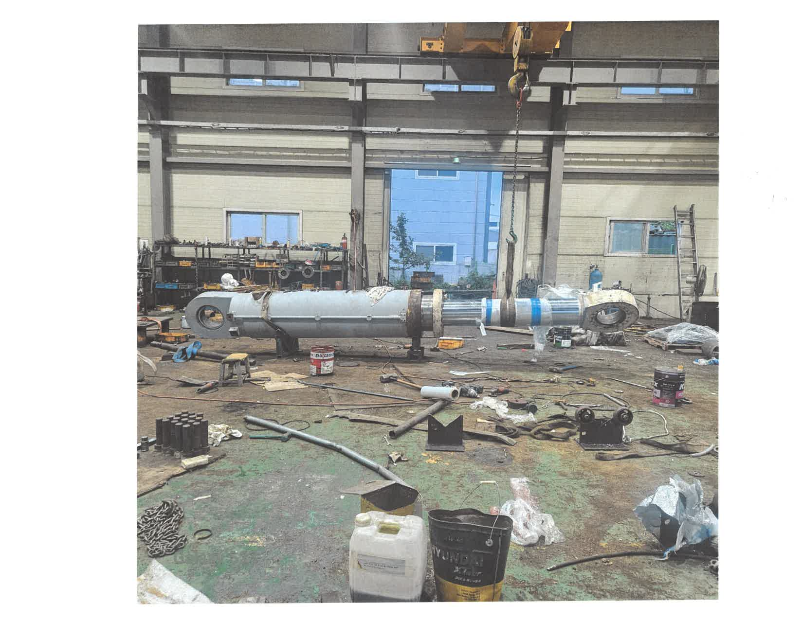

대형 유압실린더 수리
분해·세척·상태 진단 후 로드, 튜브, 헤드, 씰을 정비하고 압력 상태를 확인합니다.
↗광산·건설·산업 현장의 대형 장비는 작은 고장도 긴 가동 중단으로 이어집니다. PISTON WORKS는 대형 유압실린더와 핵심 구동부품을 진단하고, 필요한 공정을 한 곳에서 수행합니다.
현장에서 답을 찾아온 기술자들이 입고 상태부터 출고까지 책임 있게 관리합니다.
정비 프로세스 확인 →고장 원인을 정확히 파악하고, 부품별 최적 공정으로 성능을 복원합니다.
분해·세척·상태 진단 후 로드, 튜브, 헤드, 씰을 정비하고 압력 상태를 확인합니다.
↗마모된 부싱과 핀, 샤프트 및 하우징을 정밀 가공하여 요구 치수에 맞게 복원합니다.
↗기어, 밸브블록, 구동부품의 손상 상태에 맞춰 재생 또는 교체 방안을 제안합니다.
↗장비가 있는 현장에서 탈거와 장착을 지원해 이동과 정비에 드는 시간을 줄입니다.
↗
외관, 작동 상태와 주요 치수를 확인해 손상 범위를 파악합니다.
부품별 상태를 확인하고 수리 범위와 예상 공정을 협의합니다.
필요 부위를 정밀 가공하고 씰과 손상 부품을 교체합니다.
최종 조립 후 누유와 작동 상태를 확인하고 출고합니다.
실제 현장에서 진행한 정비 기록입니다. 사진을 눌러 크게 확인해 보세요.
장비명, 증상, 부품 사진을 보내주시면 확인 후 연락드리겠습니다.